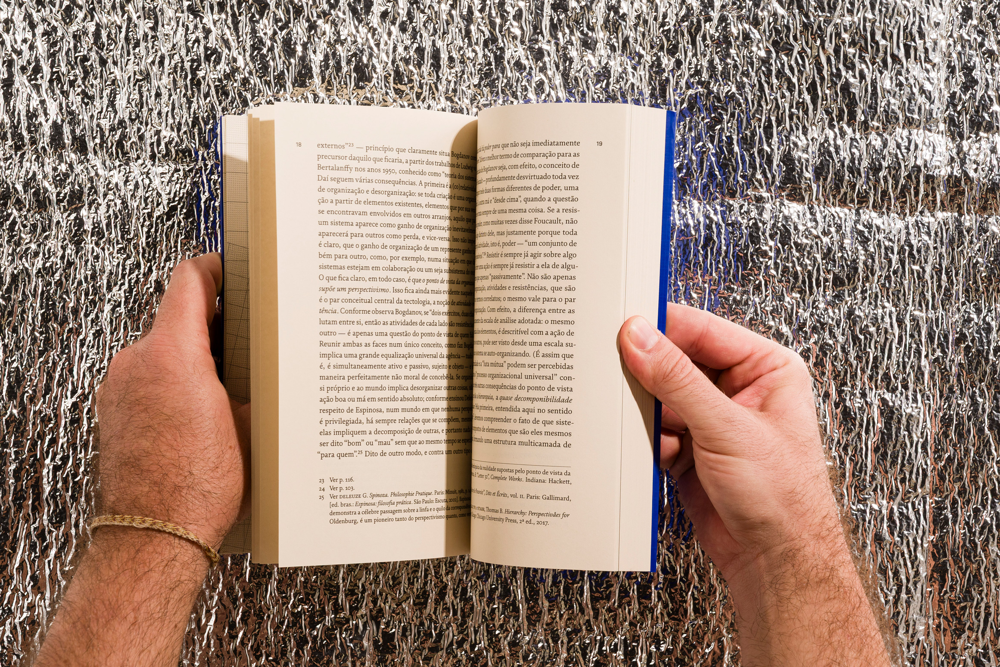
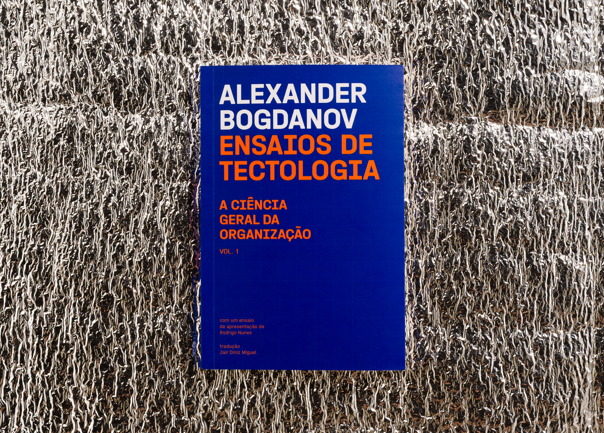
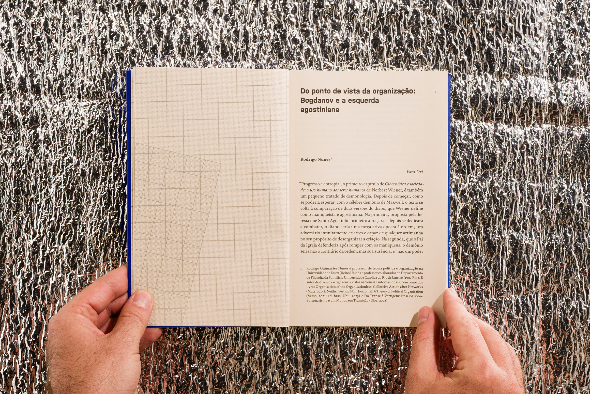
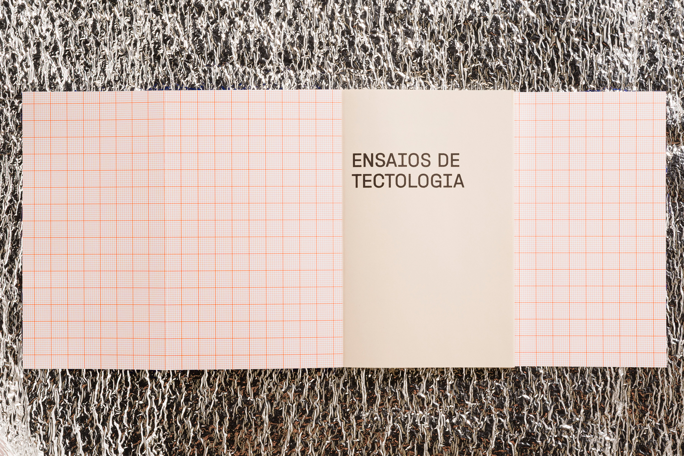

Graphic design by Gabriel Menezes
Layout by Cecília Cartaxo
2024
About
Essays in Tectology, by Alexander Bogdanov, was published for the first time in Brazil by Editora Machado. The graphic design developed by Molde studio features the FS Brabo and Halvar typefaces. The cover was printed using two spot colors (Pantone), while the interior was produced in monochrome printing. The illustrations reference graph paper as a visual metaphor for structured thinking.
What I did
graphic design, copy editing, layout, and prepress/finalizing files for printing



